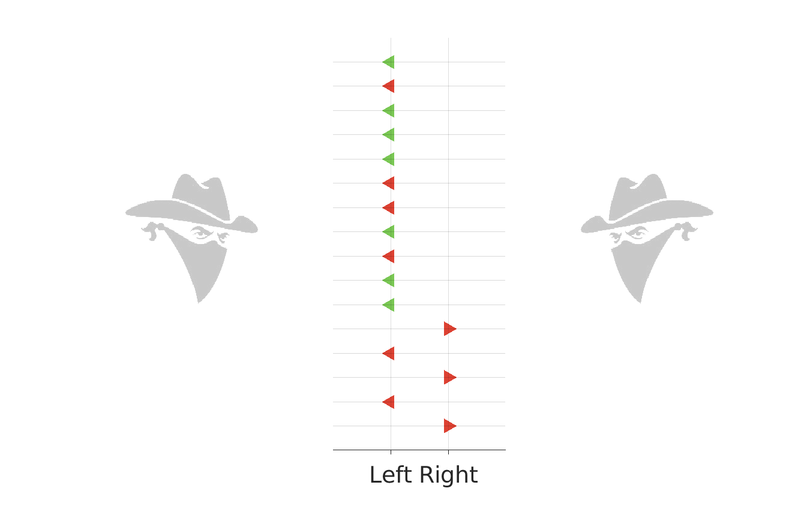
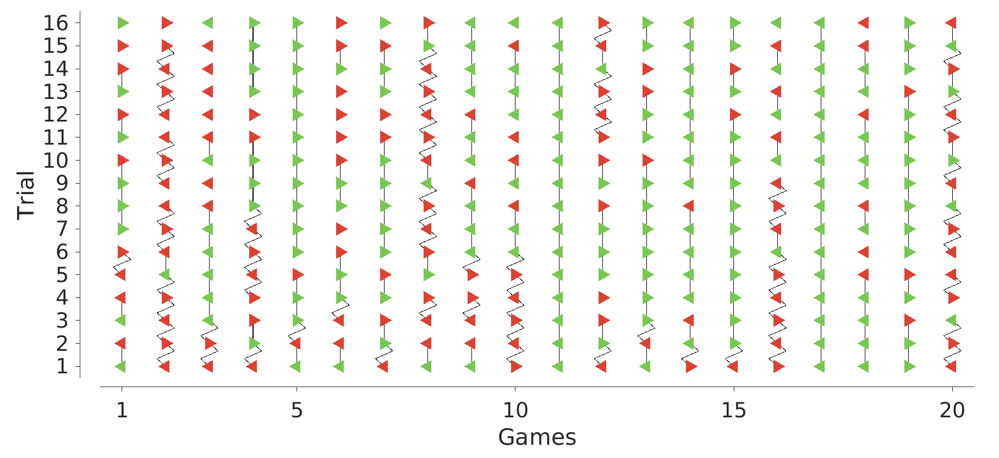
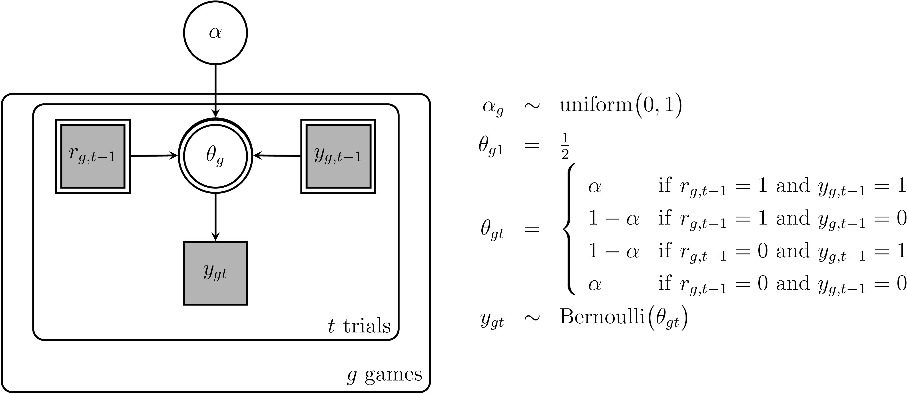
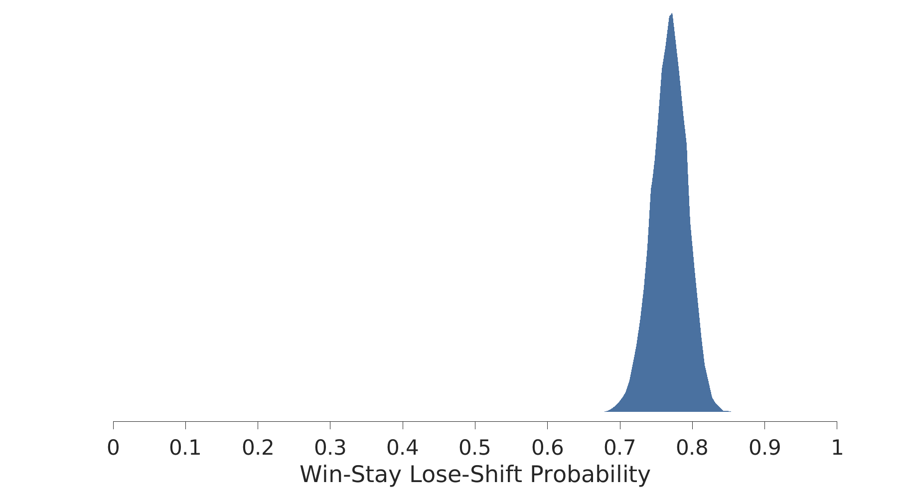
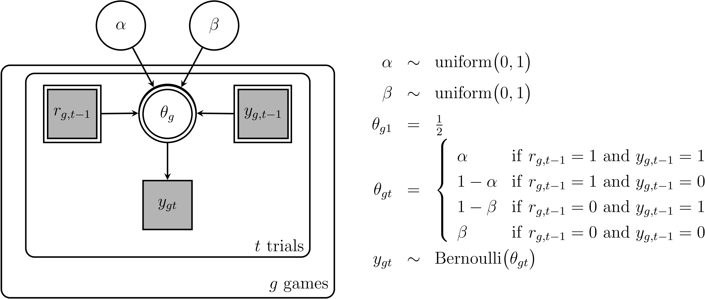
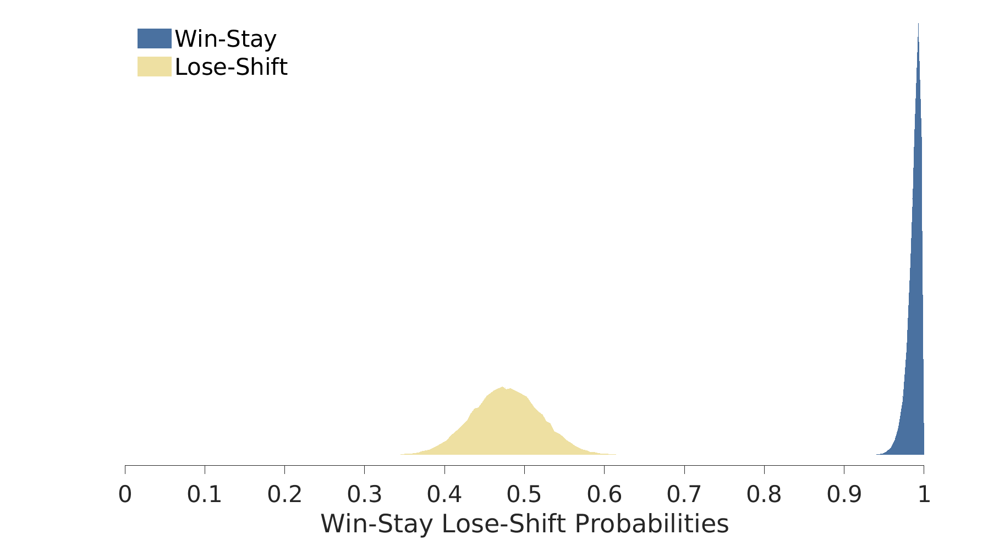
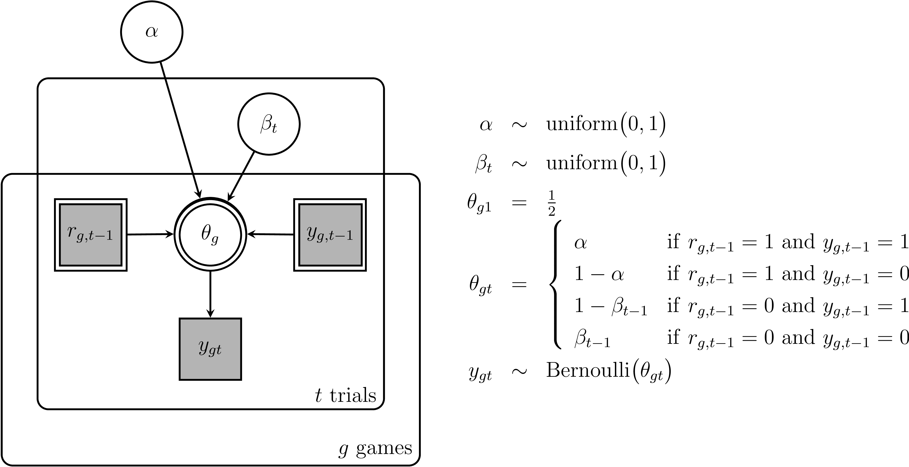
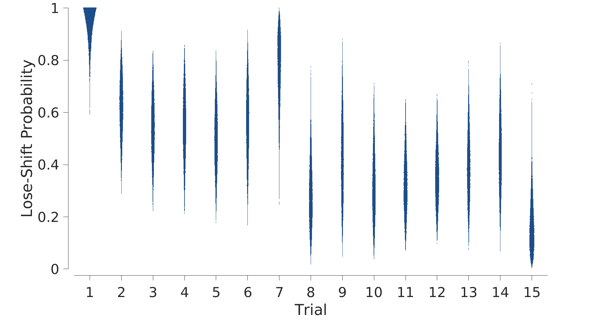
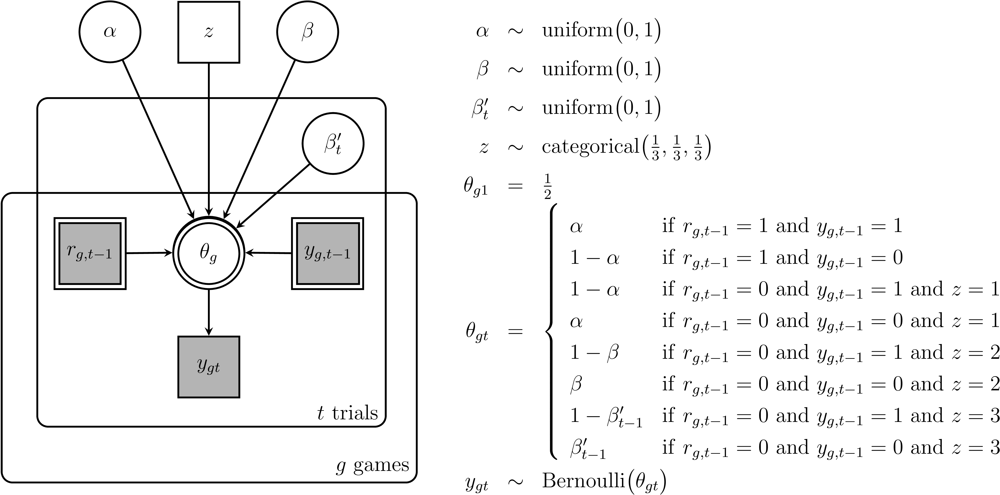

This case-study involves a statistic problem known as a bandit problems (Berry, & Fristedt, 1985; Gittins, 1979; Kaebling, Littman, & Moore, 1996; Macready,& Wolpert, 1998; Sutton, & Barto, 1998), often used to study human decision making (Cohen, McClure, & Yu, 2007; Daw et al. 2006; Lee et al., 2011; Schulz et al., 2019; Speekenbrink & Konstantinidis, 2015; Wu et al., 2018). Using bandit problems to study human decision making involves a task in which people play a series of games, and each game has a fixed and known number of trials. To complete a game, a person chooses repeatedly between a set of options. Each of these options has an unknown rate of providing a reward, which is fixed within the trials of a game, but change from game to game. The goal is to maximize the number of rewards received.
An example of a single bandit problem game is shown in the figure below. There are only two options, corresponding to choose “left” or “right”, and there are 16 trials. The person chose the right option on the first trial, and did not receive a reward, as indicated by the red triangle. They then shifted to the left option on the next trial, and again did not receive a reward. This pattern of shifting but failing continues until the sixth trial, when a reward is received for the left option. For the remaining trials, the person stayed with the left option, receiving six more rewards, for a total of seven rewards overall in the game.

What makes bandit problems psychologically interesting is that they naturally capture the tension between exploration and exploitation that characterizes many real-world sequential decision problems (e.g., Mehlhorn et al. , 2015). On the first trials of a game, with just a few binary outcomes observed, there is little information about the reward rates of the options. This encourages an initial exploration to gather information about the options. On the last trials of the game, many binary outcomes are available, and much more is known about the reward rates of the options. This encourages a move toward exploitation of known good options.
Our data come from 20 games with 16 trials completed by one participant in one study of a larger experiment conducted by Lee et al. (2011). The data are detailed in the figure below, using a similar format to the example in the figure above. The demonstration game above is the tenth game in the data set. The sequences of left and right choices are shown by left and right facing triangles, and rewards and failures are shown in green and red.

In the figure above, successive choices that correspond to a “win-stay” strategy, in which the same option is chosen after a reward, are connected by straight lines. Successive choices that correspond to a “lose-shift” strategy, in which the other option is chosen after a failure, are connected by zig-zagging lines. It is clear that many of the decisions are consistent with these strategies.
The win-stay lose-shift strategies are the basis for a long-established and widely-used model of decision making in bandit problems (). We denote the decision made on the th trial of the th game by if the left option is chosen and if the right option is chosen. We also denote the outcome of this choice by for reward for failure. The basic win-stay lose-shift (WSLS) model assumes that the probability of choosing the right option is
where is a parameter representing the probability of executing the strategy correctly. This sort of “accuracy of execution” or “tremble error” parameter is a standard way of making an inherently deterministic cognitive model into a probabilistic one. Finally, since the WSLS strategy only applies from the second trial onwards, the model simply assumes that there is an equal probability of choosing either option on the first trial of every game, so that
and the observed data are
The corresponding graphical model is shown below. It shows that the response probability that accounts for the behavioral data depends on the previous decision , whether it led to a reward and the accuracy of execution . The same accuracy of execution is assumed to apply for all of the trials on all the games, and so is outside the two plates.

The JAGS model banditWSLS_1_jags.txt implements the graphical model. The definition of theta[g, t] is achieved using a four-part sum that can be thought of as a case statement. There are four possibilities, depending on which option was chosen on the previous trial, and whether or not it was rewarded. Each part of the sum corresponds to one of these cases. For example alpha * equals(r[g, j-1], 1) * equals(y[g, t-1], 1) corresponds to the previous trial receiving a reward when the right option was chosen. According to the model, this means the right option should again be chosen on the current trial with probability . If the two equals conditions are met, the multiple alpha will be the result of the overall sum. Note that only one of the four components of the sum can ever be true, so that either alpha or 1-alpha will be returned as appropriate. The other part of the code worth noting is the posterior predictive check implemented by the variable yPostpred. This measures whether the response probability theta[g, t] favors the actual observed decision, by testing whether it is above or below 0.5. Thus, it provides a basic assessment of how often the most likely posterior predictive outcome matches the behavioral data.
# Bandit win-stay lose-shiftmodel{# Datafor (g in 1:nGames){y[g, 1] ~ dbern(0.5)yPostpred[g, 1] = 0.5for (t in 2:nTrials){theta[g, t] = alpha*equals(r[g, j-1], 1)*equals(y[g, t-1], 1)+ (1 - alpha)*equals(r[g, j-1], 1)*equals(y[g, t-1], 0)+ (1 - alpha)*equals(r[g, j-1], 0)*equals(y[g, t-1], 1)+ alpha*equals(r[g, j-1], 0)*equals(y[g, t-1], 0)y[g, t] ~ dbern(theta[g, t])yPostpred[g, t] = equals(step(theta[g, t] - 0.5), y[g ,t])}}# Prioralpha ~ dunif(0, 1)}
The MATLAB script banditWSLS_1.m supplies the data and generates the plot of the posterior distribution for the parameter shown below. The script also calculates the average posterior predictive agreement, which is 0.75. Thus, the WSLS strategy is inferred to be followed somewhere between 70% to 80% of the time, and is descriptively adequate to the extent it matches 75% of the decisions made by the participant.

A natural variant of the basic WSLS model assumes that the tendency to follow the win-stay oart of the strategy is not necessarily the same as the the tendency to follow the lose-shift component (). This leads to an extended model with two accuracy of execution parameters, and , that apply separate to the win-stay and lose-shift cases.
The extended graphical model is shown below. The only change is the introduction of the second accuracy of execution parameter , and the change in the definition of so that the cases involving use this new parameter.

The JAGS model banditWSLS_2.txt implements the graphical model. The changes simply introduce beta ~ dunif(0,1) and use it in the definition of theta[g, t].
xxxxxxxxxx# Bandit extended win-stay vs lose-shiftmodel{# Datafor (g in 1:nGames){y[g, 1] ~ dbern(0.5)yPostpred[g, 1] = 0.5for (t in 2:nTrials){theta[g, t] = alpha*equals(r[g, t-1], 1)*equals(y[g, t-1], 1)+ (1 - alpha)*equals(r[g, t-1], 1)*equals(y[g, t-1], 0)+ (1 - beta)*equals(r[g, t-1], 0)*equals(y[g, t-1], 1)+ beta*equals(r[g, t-1], 0)*equals(y[g, t-1], 0)y[g, t] ~ dbern(theta[g, t])yPostpred[g, t] = equals(step(theta[g, t] - 0.5), y[g ,t])}}# Prioralpha ~ dunif(0, 1)beta ~ dunif(0, 1)}
The MATLAB script banditWSLS_2.m supplies the data and generates the plot of the posterior distribution for the and parameter shown below. It is clear that is almost certainly very close to one, consistent with the participant having a high probability of staying with the same choice after a reward, but mis close to one-half, consistent with only shifting to the other option after a failure about half the time. The average posterior predictive agreement for the extended model is 0.77.

A further extension of the basic model is motivated by thinking about the trade-off between exploration and exploitation. Whenever a reward is received, more evidence is obtained that the chosen option is a good one. This means there is no reason not to choose that option again, consistent with the win-stay component of the model. When a failure is received, however, whether it provides evidence for switching to the other alternative depends on whether it is better to explore or exploit. A failure on an early trial probably does suggest switching. A failure on a later trial, however, may not. For example, if the failure is on trial 15, and there is already substantial evidence that option produces rewards with high probability, choosing it again one last time on trial 16 seems sensible. This intuition suggests that the probability of following the lose-shift strategy may be trial dependent.
The graphical model below shows one way to implement this idea. There is now a separate parameter corresponding to the accuracy of execution of the lose-shift strategy for the case when there is failure on the th trial. Notice that the node in the graphical model is now inside the plate for trials, but the node remains outside.

The JAGS model banditWSLS_3.txt implements the graphical model. The key addition is the definition of the beta[t] parameters and their inclusion in the definition of theta[g, t].
xxxxxxxxxx# Bandit win-stay lose-shift# v3: trial-dependent lose-shiftmodel{# Datafor (g in 1:nGames){y[g, 1] ~ dbern(0.5)yPostpred[i, 1] = 0.5for (t in 2:nTrials){theta[i, jg = alpha*equals(r[g, t-1], 1)*equals(y[g, t-1], 1)+ (1 - alpha)*equals(r[g, t-1], 1)*equals(y[g, t-1], 0)+ (1 - beta[t-1])*equals(rtg, j-1], 0)*equals(y[g, t-1], 1)+ beta[t-1]*equals(r[g, j-1], 0)*equals(y[g, t-1], 0)y[g, t] ~ dbern(theta[g, t])yPostpred[g, t] = equals(step(theta[g, t] - 0.5), y[g ,t])}}# Prioralpha ~ dunif(0, 1)for (t in 1:(nTrials-1)){beta[t] ~ dunif(0, 1)}}
The MATLAB script banditWSLS_3.m supplies the data and generates the plot of the posteriors for the parameters shown below. These take the form of violin plots, with widths that indicate posterior probabilities for the probability of following lose-shift after each of the first 15 trials. These posteriors span a wide range of values, indicating significant uncertainty. The uncertainty is the result of each parameter being informed by relatively few data. For example, the parameter is only informed in games where the participant chose an option that received a failure on the 8th trial. Despite this uncertainty, there is a suggestion in the inferences that the probability of following the lose-shift strategy decreases over the course of a game, consistent with the intuition about exploration.

Three different models have been proposed
Comparing these strategies as accounts of the data is a model selection question, which can be addressed using posterior model probabilities or Bayes factors. The graphical model below implements the product-space approach to estimating posterior model probabilities. The key idea is that a latent model indicator parameter indexes which of the three models generates the observed data. The posterior distribution of then corresponds to the posterior model probabilities, based on the uniform prior provided by .

The JAGS model banditWSLS_4.txt implements the graphical model. It is worth noting that separate parameters are maintained for each model. This is not logically necessary, but often improves sampling. It is also worth noting the use of the R concatenation syntax in defining the prior z ~ dcat(c(1, 1,1)).
x# Bandit win-stay lose-shift# v4: model selectionmodel{# Datafor (g in 1:nGames){y[g, 1] ~ dbern(0.5)for (t in 2:nTrials){# Basic WSLS modeltheta[g, t, 1] = alpha[1]*equals(r[g, t-1], 1)*equals(y[g, t-1], 1)+ (1 - alpha[1])*equals(r[g, t-1], 1)*equals(y[g, t-1], 0)+ (1 - alpha[1])*equals(r[g, t-1], 0)*equals(y[g, t-1], 1)+ alpha[1]*equals(r[g, t-1], 0)*equals(y[g, t-1], 0)# Extended WS vs LS modeltheta[g, t, 2] = alpha[2]*equals(r[g, t-1], 1)*equals(y[g, t-1], 1)+ (1 - alpha[2])*equals(r[g, t-1], 1)*equals(y[g, t-1], 0)+ (1 - beta[2])*equals(r[g, t-1], 0)*equals(y[g, t-1], 1)+ beta[2]*equals(r[g, t-1], 0)*equals(y[g, t-1], 0)# Extended WS vs LS with trial-dependent LS modeltheta[g, t, 3] = alpha[3]*equals(r[g, t-1], 1)*equals(y[g, t-1], 1)+ (1 - alpha[3])*equals(r[g, t-1], 1)*equals(y[g, t-1], 0)+ (1 - betaInd[t-1])*equals(r[g, t-1], 0)*equals(y[g, t-1], 1)+ betaInd[t-1]*equals(r[g, t-1], 0)*equals(y[g, t-1], 0)# Datay[g, t] ~ dbern(theta[g, t, z])}}# Priorsz ~ dcat(c(1, 1, 1)) # model indicatoralpha[1] ~ dunif(0, 1)alpha[2] ~ dunif(0, 1)alpha[3] ~ dunif(0, 1)beta[1] ~ dunif(0, 1)beta[2] ~ dunif(0, 1)for (t in 1:(nTrials-1)){betaInd[t] ~ dunif(0, 1)}}
The MATLAB script banditWSLS_4.m supplies the data and produces output summarizing the posterior of . It turns out that the posterior probabilities are 0.00, 0.57, and 0.43 for models , , and , respectively. A reasonable conclusion from these results is that there is evidence that both of the extended models improve the basic model, but it is uncertain whether the trial-dependent extension improves upon the earlier extension separating win-stay from lose-shift probabilities. There is slightly more evidence in favor of , suggesting that the additional complexity in allowing trial-dependent lose-shift probabilities outweighs the improvement in goodness-of-fit, but it is close. It seems likely more data should be collected to test whether it provides the evidence needed to justify the more complicated model.
Berry, D. A., & Fristedt, B. (1985). Bandit problems: Sequential allocation of experiments. London: Chapman & Hall.
Gittins, J. C. (1979). Bandit processes and dynamic allocation indices. Journal of the Royal Statistical Society, Series B, 41, 148–177.
Kaebling, L. P., Littman, M. L., & Moore, A. W. (1996). Reinforcement learning: A survey. Journal of Artificial Intelligence Research, 4, 237–285
Lee, M.D., Zhang, S., Munro, M.N., & Steyvers, M. (2011). Psychological models of human and optimal performance on bandit problems. Cognitive Systems Research, 12, 164-174.
Mehlhorn, K., Newell, B.R., Todd, P.M., Lee, M.D., Morgan, K. Braithwaite, V.A., Hausmann, D., Fielder, K., & Gonzalez, C. (2015). Beyond the exploration-exploitation tradeoff: A synthesis of human and animal literatures. Decision, 2, 191-215.
Schulz, E., Bhui, R., Love, B. C., Brier, B., Todd, M. T., & Gershman, S. J. (2019). Structured, uncertainty-driven exploration in real-world consumer choice. Proceedings of the National Academy of Sciences, 116, 13903-13908.
Speekenbrink, M., & Konstantinidis, E. (2015). Uncertainty and exploration in a restless bandit problem. Topics in Cognitive Science, 7, 351–367.
Wu, C. M., Schulz, E., Speekenbrink, M., Nelson, J. D., & Meder, B. (2018). Generalization guides human exploration in vast decision spaces. Nature Human Behaviour, 2, 915-924.
y[g, 1] ~ dbern(0.5) to y[g, 1] ~ dbern(phi) and adding the prior phi ~ dunif(0,1). ↩